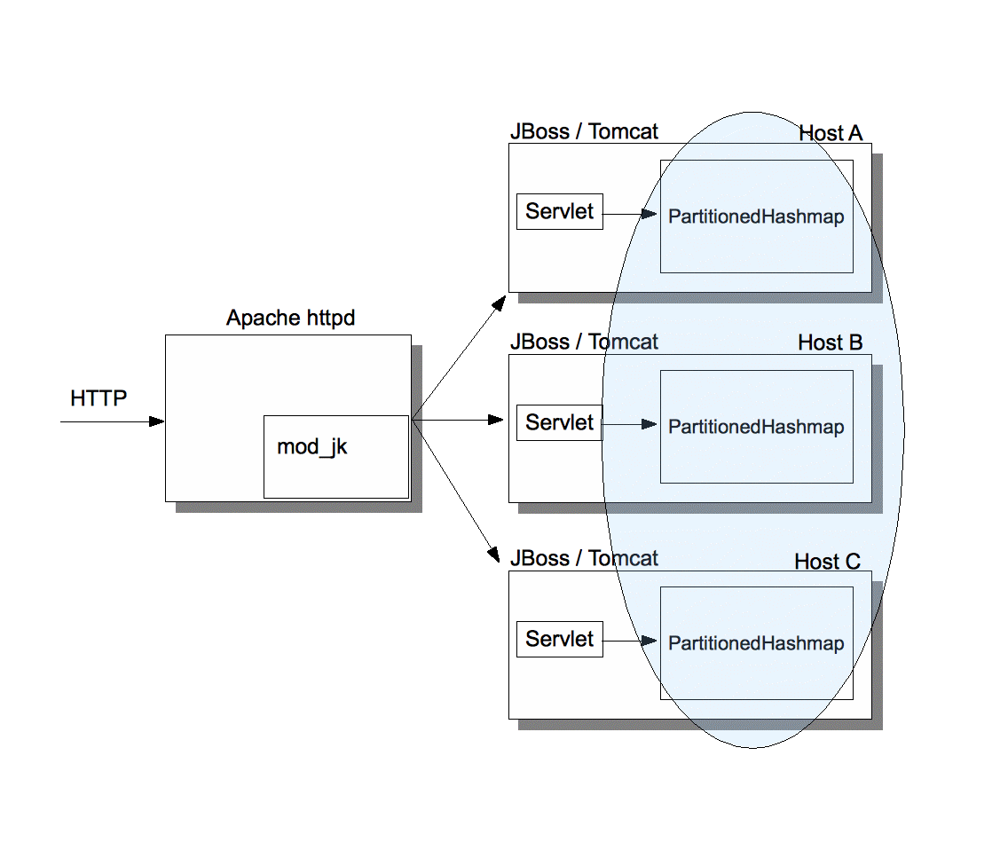

Bela Ban, JBoss
Sept 2008
Memcached is a widely used cache, which can be distributed across a number of hosts. It is is a hashmap storing key/value pairs. Its main methods are set(K,V) which adds a key/value pair, get(K) which returns a value for a previously inserted key and delete(K) which removes a key/value pair.
Memcached is started on a given host and listens on a given port (11211 being the default). The daemon is written in C, but clients can be written in any language and talk to the daemon via the memcached protocol.
Typically, multiple memcached daemons are started, on different hosts. The clients are passed a list of memcached addresses (IP address and port) and pick one daemon for a given key. This is done via consistent hashing, which always maps the same key K to the same memcached server S. When a server crashes, or a new server is added, consistent hashing makes sure that the ensuing rehashing is minimal. Which means that most keys still map to the same servers, but keys hashing to a removed server are rehashed to a new server.
Memcached does not provide any redundancy (e.g. via replication of its hashmap entries); when a server S is stopped or crashes, all key/value pairs hosted by S are lost.
The main goal of memcached is to provide a large distributed cache sitting in front of a database (or file system). Applications typically ask the cache for an element and return it when found, or else ask the DB for it. In the latter case, the element is added to the cache before returning it to the client and will now be available from the cache on the next cache access.
This speeds up applications with good cache locality (e.g. fetching web pages comes to mind), because even a round trip in a LAN is typically faster then a round trip to the DB server, plus the disk access for reading a SELECT statement.
In addition, clients now have a huge aggregated cache memory. If we start 10 memcached daemons of 2GB memory each, then we have a 20GB (virtual) cache. This is bigger than most physical memory sizes of most hosts today (2008).
Figure 1 shows a typical use of memcached. The example shows an instance of Apache which serves HTTP requests and a Python client running in the mod_python Apache module. There are 3 instances of memcached started, on hosts A, B and C. The Python client is configured with a list of [A,B,C].
When a request hits the Python code that requires a DB lookup, the Python code first checks the cache by hashing the key to a server. Let's assume K is hashed to C, so now the client sends a GET(K) request to C via the memcached protocol and waits for the result. If the result is not null, it is returned to the caller as an HTTP response. If not, the value for K is retrieved from the DB, inserted into the cache (on host C) and then returned to the client. This ensures that the next lookup for K (by any client) will find K,V in the cache (on host C) and does not have to perform a DB lookup.
A modification to the DB is typically also followed by a cache insertion: so if K/V is modified, then we execute a SET(K,V,T) against the cache after the DB insertion.
Each SET request carries an expiry timestamp T with it, which lets the client define when the entry should be evicted from the cache. The time stamp is given in seconds, 0 means don't expire1 and -1 means don't cache.
Illustration
1: The memcached architecture
PartitionedHashMap is an implementation of memcached on top of JGroups, written completely in Java. It has a couple of advantages over memcached:
Java clients and PartitionedHashMap can run in the same address space and therefore don't need to use the memcached protocol to communicate. The latter is text based2 and slow, due to serialization. This allows servlets to access the cache directly, without serialization overhead.
All PartitionedHashMap processes know about each other, and can therefore make intelligent decisions as to what to do when a cluster membership change occurs. For example, a server to be stopped can migrate all of the keys it manages to the next server. With memcached, the entries hosted by a server S are lost when S goes down. Of course, this doesn't work when S crashes.
Similat to the above point, when a cluster membership change occurs (e.g. a new server S is started), then all servers check whether an entry hosted by them should actually be hosted by S. They will move all entries to be hosted by S to S. This has the advantage that entries don't have to be re-read from the DB (for example) and inserted into the cache (as in memcached's case), but the cache rebalances itself automatically.
PartitionedHashMap has a level 1 cache (L1 cache). This allows for caching of data near to where it is really needed. For example, if we have servers A, B, C, D and E and a client adds a (to be heavily accessed) news article to C, then memcached would always redirect every single request for the article to C. So, a client accessing D would always trigger a GET request from D to C and then return the article. JGroups caches the article in D's L1 cache on the first access, so all other clients accessing the article from D would get the cached article, and we can avoid a round trip to C. Note that each entry has an expiration time, which will cause the entry to be removed from the L1 cache on expiry, and the next access would have to fetch it again from C and place it in D's L1 cache. The expiration time is defined by the submitter of the article.
Since the RPCs for GETs, SETs and REMOVEs use JGroups as transport, the type of transport and the quality of service can be controlled and customized through the underlying XML file defining the transport. For example, we could add compression, or decide to encrypt all RPC traffic. It also allows for use of either UDP (IP multicasting and/or UDP datagrams) or TCP.
The connector (org.jgroups.blocks.MemcachedConnector) which is responsible for parsing the memcached protocol and invoking requests on PartitionedHashMap, PartitionedHashMap (org.jgroups.blocks.PartitionedHashMap) which represents the memcached implementation, the server (org.jgroups.demos.MemcachedServer) and the L1 and L2 caches (org.jgroups.blocks.Cache) can be assembled or replaced at will. Therefore it is simple to customize the JGroups memcached implementation; for example to use a different MemcachedConnector which parses a binary protocol (requiring matching client code of course).
All management information and operations are exposed via JMX.
Figure 2 shows a typical use case for which PartitionedHashMap was designed.
Clients access a web application via Apache and forward HTTP requests for dynamic content via mod-jk to one of the nodes in the cluster. This is usually a servlet/JSP/JSF container such as JBoss, and the servlet then handles the request and returns an HTTP response.
The servlet has to access the DB, and in a typical scenario for webapps, 10% of the requests to the DB are writes and 90% are reads.
Because access to the DB is slow (due to the round trip to the DB server, plus the disk access), and because many clients might access the DB at the same time, therefore creating a bottleneck, the servlet uses PartitionedHashMap to cache the result of its access to the DB.
This is very simple and could be done for example like this:
Read(X)
Read from the cache. If X was found in the cache, return it and don't access the DB
If not, read from the DB and the place the result into the cache
On the next read for X, it will be found in the cache (if not expired yet)
Write(X)
Write X to the DB
Insert X into the cache

Illustration
2: a typical use case for PartitionedHashMap
The local cache instance will hash each key K to either host A, B or C. So, for example, if the servlet on host A does a GET(K), and K is hashed to C, then the PartitionedHashMap on A will forward the GET(K) to C. C returns the value associated with K to A. If A has an L1 cache enabled, then A will cache K,V (depending on K's expiration time). The next time a client on A accesses K, V will be returned from A's L1 cache directly.
Note that because we don't run Python clients, but Java clients, we could use a hardware load balancer which directs HTTP requests for static content to Apache, and dynamic content directly to one of the 3 JBoss servers, as shown in Fig. 3.
Note that we don't need sticky request balancing here (unless the servlet also accesses HTTP sessions which are replicated), but the cache is globally available. Of course, sticky request balancing might help increasing cache locality: if client C is always directed to host B, then B's L1 cache will already contain the most frequently accessed entries by C.
Fig. 3 shows that the hardware load balancer let's Apache handle static web pages, but directs requests for dynamic content to one of the 3 servers.
Over time, each of the 3 servers will build up a bounded cache of the most frequently accessed entries,
Illustration
3: PartitionedHashMap with a hardware load balancer
and serve them directly from the L1 cache.
Note the Fig. 3 shows that the PartitionedHashMap instances on hosts A, B and C form a cluster, so keys and values will get migrated on rehashing. While this is one large cluster, nothing prevents us from partitioning a large cluster into several smaller ones. For example, if we used mod-jk, we could create mod-jk domains, and only cluster the servers inside one domain. So, if we had 3 domains, we'd have 3 different clusters.
The advantage of partitioning a large cluster into multiple domains is that domains can be taken down independently, e.g. for HW/SW upgrades.
PartitionedHashMap can also be accessed via the memcached protocol, so existing clients continue working with it.
The setup would be the same as shown in Fig. 1, except that the backend would not consist of memcached servers, but of JGroups MemcachedServer instances.
Note that the full protocol has not been implemented, but only GET (single and multi), SET, DELETE and STATS. Adding APPEND, PREPEND, CAS etc is simple, so if you need these urgently, post this on the JGroups dev mailing list and I'll see that it gets added.
The Python and Java clients work fine.
The Java performance test (MemCachedBench) with 10000 SET, GET and REMOVE requests against 4 memcached instances on the one hand and 4 PartitionedHashMap instances on the other hand shows ca. 4 secs for GETs, 2.8 for GETs, 200ms for multi gets and 1.8 secs for removes.
The biggest overhead by far is the memcached protocol, in the above test, the protocol took ca 90% of the entire time of the test run.
The current memcached implementation is ca 10% faster than PartitionedHashMap, but - again - that diff mainly lies in the memcached protocol. A setup like the one shown in Fig. 3 should be really fast.
The main class to start the JGroups memcached implementation is org.jgroups.demos.MemcachedServer. It creates
an L1 cache (if configured)
a L2 cache (that's the default hashmap storing all entries)
and a MemcachedConnector
The latter parses the memcached protocol and is optional, for example, if you run inside of JBoss. In this case, you'd only create a PartitionedHashMap instance and possibly set the L1 cache in it.
The command line options for MemcachedServer are ('-help' dumps all options)
The API is very simple:
public void put(K key, V val): puts a key / value pair into the cache with the default caching time
public void put(K key, V val, long caching_time): same as above, but here we can explicitly define the caching time. 0 means cache forever, -1 means don't cache and any positive value is the number of milliseconds to cache the entry
public V get(K key): gets a value for key K
public void remove(K key): remove a key / value pair from the cache (L2 and L1, if enabled)
PartitionedHashMap<String,String>
map=new PartitionedHashMap<String,String>(props,
"demo-cluster");
Cache<String,String>
l1_cache=new Cache<String,String>();
l1_cache.setMaxNumberOfEntries(5);
l1_cache.disableReaping();
map.setL1Cache(l1_cache);
Cache<String, String>
l2_cache=map.getL2Cache();
l2_cache.enableReaping(10000);
map.setMigrateData(migrate_data);
map.start();
map.put(“name”,
“Bela”, 60000);
String
val=map.get(“name”);
map.remove(“name”);
System.out.println("address:
" + map.getLocalAddress());
System.out.println("L1
cache:\n" + map.getL1Cache());
System.out.println("L2
cache:\n" + map.getL2Cache());
l1_cache.stop();
map.stop();
The example first creates an instance of PartitionedHashMap, which accepts String as both keys and values. Then we configure an L1 cache which is bounded (5 entries max) and doesn't have reaping enabled. This means, when we insert an entry and the size of the L1 cache exceeds 5, the oldest entry will be removed to bring the size back to 5.
The next step configures the L2 cache (the main cache) to look for entries to evict every 10 seconds.
Then we enable data migration on cluster view changes and start the cache. The start() method is important, because it starts the JGroups channel plus the reaper timer.
Then we insert an entry, fetch it again and finally remove it. After printing out some information about the cache, we stop it.
PartitionedHashMap can be downloaded here (http://downloads.sourceforge.net/javagroups/memcached-jgroups.jar). The memcached-jgroups.jar file contains JGroups plus commons-logging.jar and log4j.jar pre-packaged in one JAR and is all you need to get started.
java -jar memcached-jgroups.jar -help will dump all command line options (see above for a description).
By default, the JAR file ships with a log4j.properties file which has logging enabled at the TRACE level for org.jgroups.blocks.PartitionedHashMap. This should be changed to WARN in production. However, to play with MemcachedServer, you may even want to enable org.jgroups.blocks.MemcachedServer at the TRACE level.
Let's start the first instance:
[linux]/home/bela/distro/JGroups/dist$ java -Djgroups.bind_addr=192.168.1.5 -jar memcached-jgroups.jar -p 11211
-------------------------------------------------------
GMS: address is 192.168.1.5:33377
-------------------------------------------------------
view = [192.168.1.5:33377|0] [192.168.1.5:33377]
0 [TRACE] PartitionedHashMap: - node mappings:
138: 192.168.1.5:33377
MemcachedConnector listening on 0.0.0.0/0.0.0.0:11211
This shows that we've started a first instance at port 11211 and its JGroups address is 192.168.1.5:33377. (Replace 192.168.1.5 with the correct interface in -Djgroups.bind_addr).
Let's now start the second instance:
[linux]/home/bela/distro/JGroups/dist$ java -Djgroups.bind_addr=192.168.1.5 -jar memcached-jgroups.jar -p 11212
-------------------------------------------------------
GMS: address is 192.168.1.5:38613
-------------------------------------------------------
view = [192.168.1.5:33377|1] [192.168.1.5:33377, 192.168.1.5:38613]
0 [TRACE] PartitionedHashMap: - node mappings:
138: 192.168.1.5:33377
902: 192.168.1.5:38613
MemcachedConnector listening on 0.0.0.0/0.0.0.0:11212
The second instance is started at port 11212 and its JGroups address is 192.168.1.5:38613. We can see that the 2 instances formed a cluster; both instances should have a view of
[192.168.1.5:33377|1] [192.168.1.5:33377, 192.168.1.5:38613].
If the cluster didn't form, go and read this (http://www.jgroups.org/javagroupsnew/docs/manual/html/ch02.html) to fix it.
Now run a simple client (we use telnet, but any of the memcached clients could be used3) and connect to the instance running at 11212:
[linux]/home/bela$ telnet localhost 11212
Trying 127.0.0.1...
Connected to localhost.
Escape character is '^]'.
set name 0 0 4
Bela
STORED
This means we added a key “name” with a 4-byte value of “Bela”. Let's add another key/value:
set id 0 0 6
322649
STORED
To get the value associated with “name” and “id”, execute the following:
get id name
VALUE id 0 6
322649
VALUE name 0 4
Bela
END
This returns both values.
Add a few more key/value pairs, to be sure that they are (more or less) evenly distributed across both instances. Note that you can start a second telnet session, connected to the server listening on port 11211.
Now kill one of the 2 servers. Don't use kill -9, as the server registers a shutdown handler which is not invoked on kill -9. Do a simple CTRL-C. This mimicks a graceful shutdown. In my case, I killed instance one, and saw that its keys were migrated to instance two:
862209 [TRACE] PartitionedHashMap: - migrated last_name from 192.168.1.5:33377 to 192.168.1.5:38613
862272 [TRACE] PartitionedHashMap: - migrated name from 192.168.1.5:33377 to 192.168.1.5:38613
862339 [TRACE] PartitionedHashMap: - migrated id from 192.168.1.5:33377 to 192.168.1.5:38613
We can see in the other shell that those keys were added by the second instance:
867581 [TRACE] PartitionedHashMap: - _put(last_name, [B@3a747fa2, 0)
867685 [TRACE] PartitionedHashMap: - _put(name, [B@2092dcdb, 0)
867751 [TRACE] PartitionedHashMap: - _put(id, [B@29d381d2, 0)
view = [192.168.1.5:33377|2] [192.168.1.5:38613]
867871 [TRACE] PartitionedHashMap: - node mappings:
902: 192.168.1.5:38613
We also see that the cluster view now only shows one member: instance two.
A GET on the telnet session connected to instance two reveals that the keys are indeed present:
get name id hobbies last_name
VALUE name 0 4
Bela
VALUE id 0 6
322649
VALUE hobbies 0 4
none
VALUE last_name 0 3
ban
END
This shows that key/value pairs for “name”, “last_name” and “id” were hosted by instance one and migrated to instance two on stopping instance one.
For optimal performance, message bundling should be disabled for unicast messages (which are used for RPCs, e.g. remote GET requests). This is done by setting enable_unicast_bundling to false in the transport, e.g. UDP or TCP. The reason for this is described here (http://wiki.jboss.org/wiki/ProblemAndClusterRPCs) in more details.
1Of course, entries with a timestamp of 0 can still be evicted when the cache needs to make room for more entries.
2There has been talk of a binary protocol for memcached, but this hasn't materialized yet (as of 2008)
3The client would have to be configured with both servers: 192.168.1.5:11211 and 192.168.1.5:11212